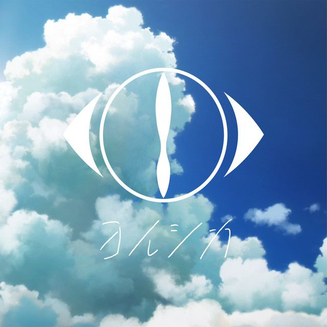
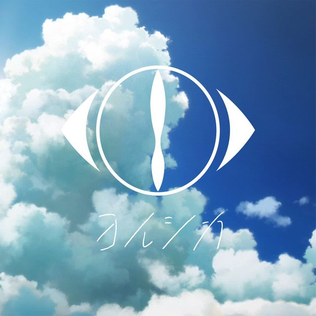

歌手介紹
Yorushika是由作曲家n-buna與歌手suis組成的日本搖滾樂團。於2017年組成，出道時所屬的音樂廠牌為Dwango旗下的U&R records，目前所屬的音樂廠牌為日本環球音樂。2019年6月14日以單曲《心上破了洞》（心に穴が空いた）自日本環球音樂主流出道。
Yorushika是由作曲家n-buna與歌手suis組成的日本搖滾樂團。於2017年組成，出道時所屬的音樂廠牌為Dwango旗下的U&R records，目前所屬的音樂廠牌為日本環球音樂。2019年6月14日以單曲《心上破了洞》（心に穴が空いた）自日本環球音樂主流出道。
